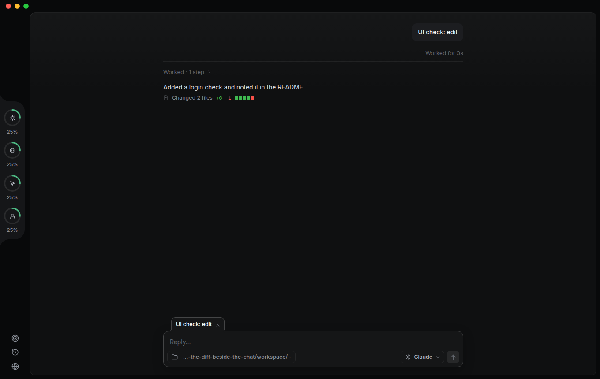
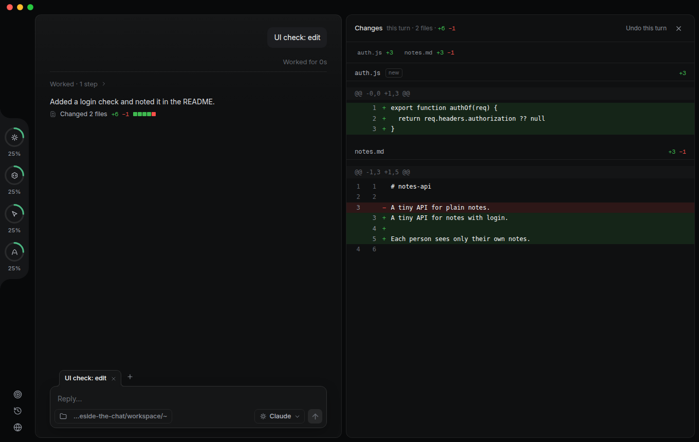
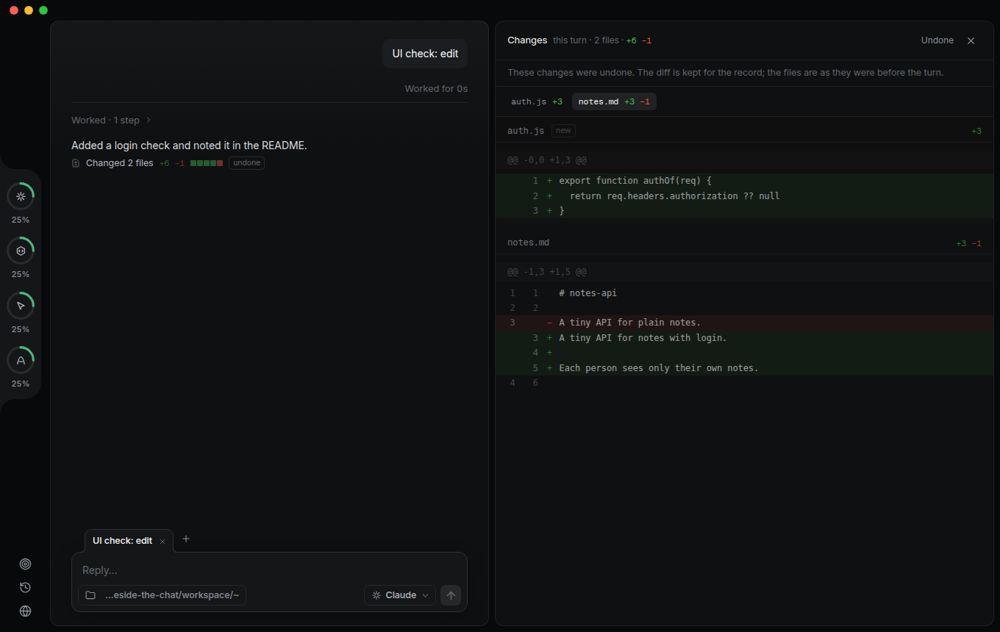
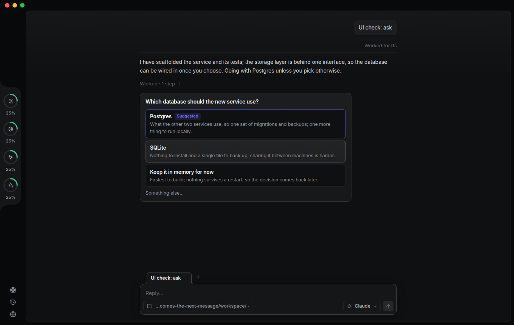
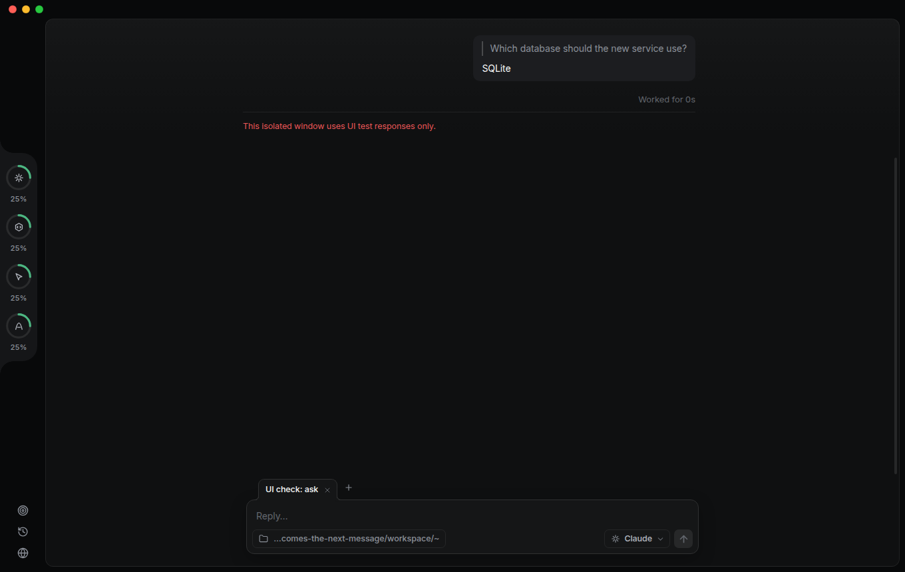

Done. Login is built, tested, and documented. Each user now sees only their own notes.
server.js now has POST /register, POST /login and POST /logout. Every notes route requires a bearer token, and listing and creating notes are scoped to the logged-in user.test/auth.test.js covers the isolation guarantee directly: two users create notes and each list returns only their own.All 6 tests pass. Storage is still in memory, matching the comment in the file.
@@ -1,8 +1,52 @@11 // A small notes API: in-memory for now.22 import { createServer } from 'node:http'3+import { randomBytes, scryptSync, timingSafeEqual } from 'node:crypto'34 4−const notes = []5+const users = new Map() // username → { salt, hash, id }6+const sessions = new Map() // token → userId7+const notes = [] // { id, userId, text, at }8+9+// Who is calling, from the bearer token; null when the token is missing or unknown.10+function authOf(req) {11+ const token = (req.headers.authorization ?? '').replace(/^Bearer /, '')12+ const userId = sessions.get(token)13+ return userId === undefined ? null : { userId }14+}15+16+function hash(password, salt) {17+ return scryptSync(password, salt, 64)18+}519 620 createServer((req, res) => {7− if (req.method === 'GET' && req.url === '/notes') {8− res.setHeader('content-type', 'application/json')9− return res.end(JSON.stringify(notes))21+ if (req.method === 'POST' && req.url === '/register') return register(req, res)22+ if (req.method === 'POST' && req.url === '/login') return login(req, res)23+ const auth = authOf(req)24+ if (!auth) {25+ res.statusCode = 40126+ return res.end()27+ }28+ if (req.method === 'GET' && req.url === '/notes') {29+ res.setHeader('content-type', 'application/json')30+ return res.end(JSON.stringify(notes.filter((note) => note.userId === auth.userId).map(publicNote)))1031 }@@ -14,9 +58,10 @@1458 req.on('end', () => {15− const note = { id: notes.length + 1, text: JSON.parse(body).text, at: Date.now() }59+ const text = parse(body)?.text60+ if (typeof text !== 'string') return bad(res, 'Send JSON with a "text" string.')61+ const note = { id: notes.length + 1, userId: auth.userId, text, at: Date.now() }1662 notes.push(note)1763 res.statusCode = 2011864 res.setHeader('content-type', 'application/json')19− res.end(JSON.stringify(note))65+ res.end(JSON.stringify(publicNote(note)))2066 })
@@ -0,0 +1,71 @@1+import assert from 'node:assert/strict'2+import { test } from 'node:test'3+import { start } from './helpers.js'4+5+test('each user only sees their own notes', async () => {6+ const api = await start()7+ const ann = await api.register('ann', 'pw-ann')8+ const bob = await api.register('bob', 'pw-bob')9+ await api.create(ann, 'milk')10+ await api.create(bob, 'eggs')11+ assert.deepEqual((await api.list(ann)).map((n) => n.text), ['milk'])12+ assert.deepEqual((await api.list(bob)).map((n) => n.text), ['eggs'])13+})14+ …
Captured by the isolated UI check (tests/ui/changes.spec.ts) after the decisions: variant A, no Undo yet, unified diff. A controlled turn really edited two files in a git folder; the app diffed its start and end snapshots.



Captured by the isolated UI check (tests/ui/question.spec.ts), not drawn. Left: the card a model posts with ask_user; its own pick is marked and the turn has already finished. Right: after one click on "SQLite", the answer went out as the next message with the question quoted above it, and the card folded.

